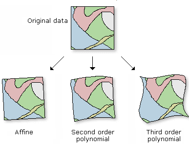
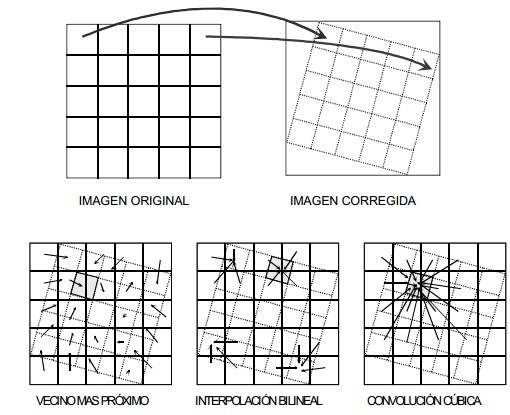

Corrección geométrica
La corrección geométrica consiste en posicionar una imagen en el espacio geográfico utilizando puntos específicos cuya localización fue tomada en terreno o constituyen hitos geográficos de una ubicación conocida por lo tanto implica un cambio en la posición que ocupan los píxeles que forman la imagen.
Con esta corrección no se busca modificar los ND de los píxeles de la imagen sino su posición en el espacio, pudiendo identificar tres etapas principales:
1.- Localización de puntos comunes a la imagen y al mapa u otra imagen de referencia.
2.- Cálculo de las funciones de transformación entre las coordenadas de la imagen y las del mapa.

Ilustración: Funciones de transformación. ESRI, 2016.
3.- Transferencia de los ND originales a la nueva posición definida por la transformación previa.

Siempre se debe considerar el tipo de remuestreo de los datos al momento de realizar la corrección; el uso del vecino más cernano suele ser siempre la opción recomendada para mantener la integridad de los valores originales.
Es importante destacar que en este momento, la mayoría de las agencias que disponen de información abierta (NASA, ESA) o de pago (Digital Globe, Imagine-it) disponen de su información con altos estándares geométricos que normalmente pueden ser consultados en los metadatos. En el caso de los sensores comerciales, la información se puede pedir con diferentes niveles de procesamiento e incluso se pueden pedir datos ortorrectificados (con un mayor costo de compra).
Obra publicada con Licencia Creative Commons Reconocimiento Compartir igual 4.0